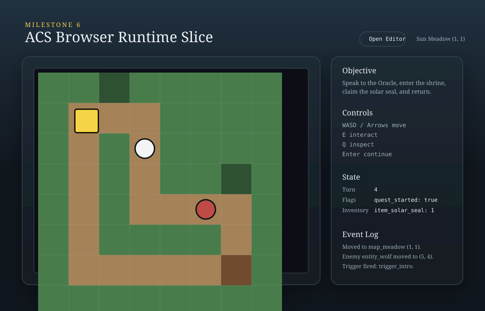
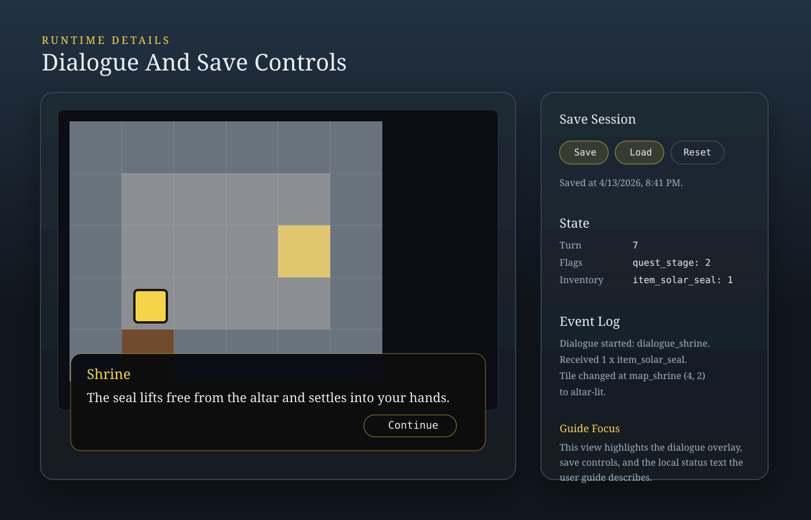
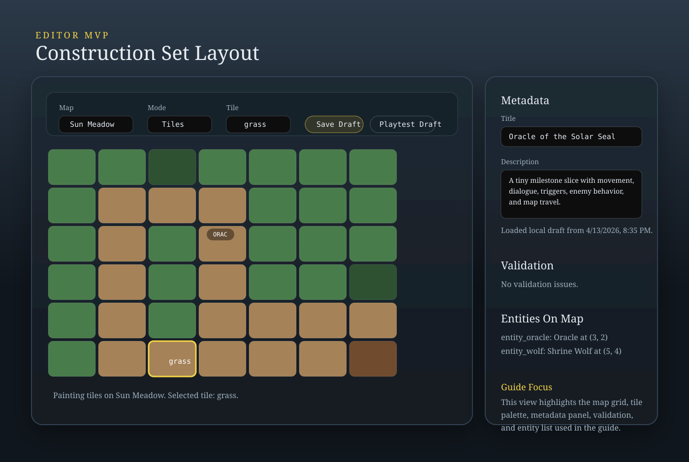

Milestone 6 Documentation
ACS User Guide
How to run the current browser application, play the sample adventure, save local progress, use the editor, and launch playtests from a locally saved draft.
Overview
This project currently provides two browser pages:
apps/web/index.html: the playable game runtimeapps/web/editor.html: the construction-set editor
Both pages run locally over HTTP and store their data in the browser's IndexedDB database named acs-local.
- Game progress is saved in the browser.
- Editor drafts are saved in the browser.
- Playtesting a draft opens that draft in the same runtime used by the sample game.
Starting The Application
- Build the TypeScript workspace if needed.
- Start the local web server from the repo root.
node .\apps\web\server.mjs
- Open the runtime in a browser:
http://localhost:4173/ - Open the editor in a browser:
http://localhost:4173/apps/web/editor.html
If port 4173 is already in use in your environment, use the alternate port configured for your session, such as 4317.
Playing The Game
The playable runtime loads the built-in sample adventure by default. That adventure is currently Oracle of the Solar Seal.

Objective
- Speak to the Oracle.
- Enter the shrine.
- Claim the Solar Seal.
- Return to the Oracle.
Controls
W,A,S,Dor arrow keys: moveE: interact with an adjacent entityQ: inspect the current tile or an adjacent entityEnterorSpace: advance dialogue
What You See On Screen
- A canvas playfield showing the current map
- A map name display and player coordinates
- Turn count, flags, and inventory summary
- An event log
- A dialogue overlay when a trigger starts dialogue
Basic Play Flow
- The player moves one tile at a time.
- Exits can transfer you from one map to another.
- Triggers may fire when you enter certain tiles or interact with entities.
- Enemy AI may respond during the enemy phase.
- The event log records movement, trigger execution, dialogue, item rewards, and enemy behavior.
Saving And Loading Game Progress
The runtime page has three buttons: Save, Load, and Reset.

Save
Save stores the current runtime snapshot locally in IndexedDB.
- Built-in sample adventure slot:
adv_milestone3:latest - Draft playtest slot:
<adventure id>:draft-playtest
Load
Load restores the most recent locally saved snapshot for the active save slot. If no save exists for that slot, the runtime reports that no local save is available.
Reset
Reset restarts the current adventure from its start state. It does not delete your saved snapshot; it only resets the active session in memory.
Using The Editor
The editor is available at apps/web/editor.html.

It is currently an MVP construction-set page focused on editing adventure metadata, painting map tiles, moving existing entities, validating the draft, saving the draft locally, and launching a playtest from the draft.
Main Areas Of The Editor
- The editing panel on the left contains the map grid and toolbar.
- The sidebar on the right contains metadata, validation messages, and entity summaries.
Top Buttons
Back To Play: opens the normal playable runtime pageSave Draft: stores the current draft locally in IndexedDBReset Draft: restores the built-in sample adventure and deletes the saved local draftPlaytest Draft: saves the current draft locally and opens a new tab running that draft in the game runtime
Editing Metadata
The Metadata panel includes Title and Description. Typing in either field immediately updates the in-memory draft. The draft is not permanently stored until you click Save Draft or Playtest Draft.
Working With Maps
The toolbar above the grid includes Map, Mode, Tile, and Entity.
- The
Mapdropdown switches between maps in the current adventure package. - The current sample includes
Sun MeadowandInner Shrine. - Changing the selected map redraws the editor grid and updates the entity summary for that map.
Tile Editing
- Set
ModetoTiles. - Choose a tile from the
Tiledropdown. - Click a cell in the grid.
The clicked cell is rewritten to the selected tile id. The tile palette is built from tile ids already present on the current map plus a fallback palette of known tiles such as grass, path, shrub, stone, floor, altar, altar-lit, door, and water.
Entity Editing
- Set
ModetoEntities. - Choose an entity from the
Entitydropdown. - Click a destination cell in the grid.
The selected entity instance is moved to the currently selected map and clicked coordinates. Milestone 6 supports repositioning only; it does not yet create or delete entities.
Validation
The Validation panel runs shared package validation against the current draft. If the draft is valid, it shows No validation issues.. Otherwise, each issue is listed with severity and message.
Saving And Resetting Drafts
Save Draftstores the current draft in IndexedDB using a key derived from the adventure id, currentlydraft:adv_milestone3.- When the editor opens, it first checks for that saved draft.
Reset Draftrestores a fresh clone of the built-in sample adventure and deletes the saved draft record.
Playtesting A Draft
- The editor saves the current draft locally.
- The editor opens a new browser tab.
- That tab loads the normal game runtime with a
draftquery parameter. - The runtime looks up the saved draft in IndexedDB.
- If found, the runtime plays the draft instead of the built-in sample adventure.
This means the playtest page is not a separate engine. It is the same runtime page, pointed at your saved draft content.
Current Limitations
- No server-backed user accounts
- No cloud save sync
- No publishing flow yet
- No creation or deletion of maps from the editor
- No creation or deletion of entity definitions or entity instances
- No trigger editor yet
- No dialogue editor yet
- No asset pipeline yet
- The runtime renderer is still a simple canvas renderer using colored tiles and abstract entity markers
Troubleshooting
The runtime says no local save exists
This usually means you have not saved yet for the current adventure or draft playtest slot, or you are in a different browser/profile than the one that created the save.
The editor does not show my previous draft
Possible causes include cleared browser storage, a different browser/profile, or a prior draft reset.
Playtest opens but shows the sample adventure
This happens when the runtime cannot find the draft key passed by the editor. In that case, the runtime falls back to the built-in sample adventure and reports that in the status text.
Milestone 6 Summary
- A playable browser runtime for a sample ACS-inspired adventure
- A local draft editor for that adventure
- A local persistence layer for both gameplay progress and editor drafts
- A playtest loop that lets the editor launch the runtime against the saved draft